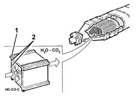

CATALYTIC CONVERTER
- Path
- Descriptions > 10 ENGINE > 1080 EMISSION CONTROL SYSTEM > 1080B EXHAUST EMISSION CONTROL SYSTEM > CATALYTIC CONVERTER
- Kind
- system description
- Applies to
- engines: 2.4 JTD 20V; all production periods
- Interactive page
- https://sloeber94.github.io/elrnDB-lThss/en/#/841715
Applies to: engines: 2.4 JTD 20V; all production periods
The catalytic converter is a post-treatment device for oxidizing the CO, HC and particles transforming them into carbon dioxide (CO2) and water vapour (H20).
The catalytic converter consists of a ceramic, honeycomb structure (1) with cells impregnated with platinum (2) which catalyzes the oxidation reactions.
The exhaust gases passing through the cells heat the catalyzer triggering off the conversion of the pollutants into inert compounds.
The oxidizing chemical reaction of the CO, HC and particles is effective at temperatures of between 200 and 350°C.
In effect, above 350°C the sulphur contained in the diesel fuel starts to oxidize producing sulphur dioxide and sulphur trioxide.
